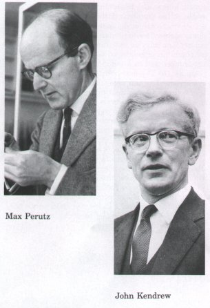
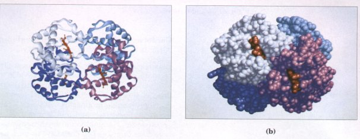
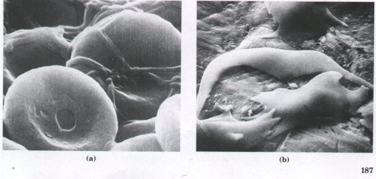
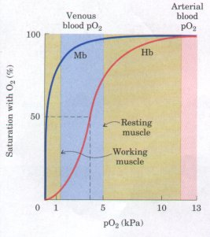
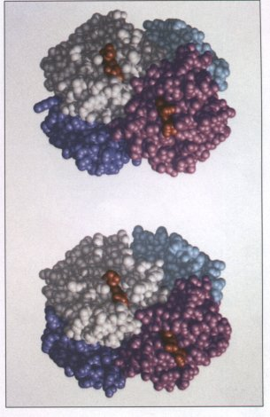
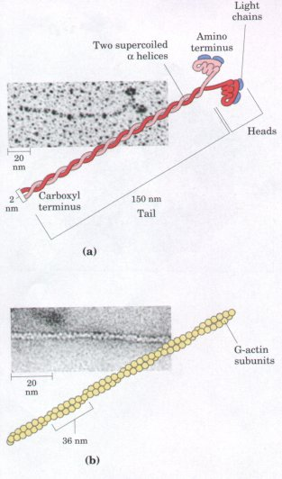
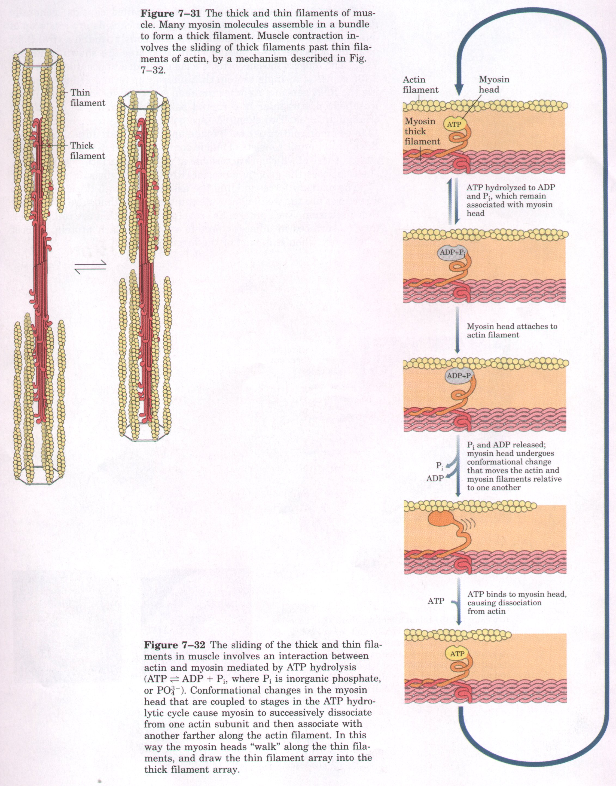
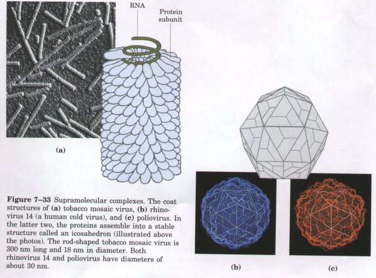

Some proteins contain two or more separate polypeptide chains or subunits, which may be identical or different in structure. One of the bestknown examples of a multisubunit protein is hemoglobin, the oxygencarrying protein of erythrocytes. Among the larger, more complex multisubunit proteins are the enzyme RNA polymerase of E. coli, responsible for initiation and synthesis of RNA chains; the enzyme aspartate transcarbamoylase (12 chains; see Fig. 8-26), important in the synthesis of nucleotides; and, as an extreme case, the enormous pyruvate dehydrogenase complex of mitochondria, which is a cluster of three enzymes containing a total of 102 polypeptide chains.
The arrangement of proteins and protein subunits in three-dimensional complexes constitutes quaternary structure. The interactions between subunits are stabilized and guided by the same forces that stabilize tertiary structure: multiple noncovalent interactions. The association of polypeptide chains can serve a variety of functions. Many multisubunit proteins serve regulatory functions; their activities are altered by the binding of certain small molecules. Interactions between subunits can permit very large changes in enzyme activity in response to small changes in the concentration of substrate or regulatory molecules (Chapter 8). In other cases, separate subunits can take on separate but related functions. Entire metabolic pathways are often organized by the association of a supramolecular complex of enzymes, permitting an efficient channeling of pathway intermediates from one enzyme to the next. Other associations, such as the histones in a nucleosome or the coat proteins of a virus, serve primarily structural roles. Large assemblies sometimes reflect complex functions. One obvious example is the complicated structure of ribosomes (see Fig. 26-12), which carry out protein synthesis.
X-ray and other analytical methods for structure determination become more difficult as the size and number of subunits in a protein increases. Nevertheless, sufficient data are already available to yield some very important information about the structure and function of multisubunit proteins.
| The first oligomeric protein to be
subjected to x-ray analysis was hemoglobin (Mr 64,500),
which contains four polypeptide chains and four heme
prosthetic groups, in which the iron atoms are in the
ferrous (Fe2+) state. The protein portion, called globin,
consists of two a chains (141 residues each) and two β
chains (146 residues each). Note that α and β do not
refer to secondary structures in this case. Because
hemoglobin is four times as large as myoglobin, much more
time and effort were required to solve its
three-dimensional structure, finally achieved by Max
Perutz, John Kendrew, and their colleagues in 1959. The hemoglobin molecule is roughly spherical, with a diameter of about 5.5 nm. The α and β chains contain several segments of a helix separated by bends, with a tertiary structure very similar to that of the single polypeptide of myoglobin. In fact, there are 27 invariant amino acid residues in these three polypeptide chains, and closely related amino acids at 40 additional positions, indicating that these polypeptides (myoglobin and the α and β chains of hemoglobin) are evolutionarily related. The four polypeptide chains in hemoglobin fit together in an approximately tetrahederal arrangement (Fig. 7-26). |
 |
.

Figure 7-26 The three-dimensional (quaternaryl structure of deoxyhemoglobin, revealed by x-ray diffraction analysis, showing how the four subunits are packed together. (a) A ribbon representation. (b) A space-filling model. The α subunits are shown in white and light blue; the β subunits are shown in pink and purple. Note that the heme groups, shown in red, are relatively far apart.
One heme is bound to each polypeptide chain of hemoglobin. The oxygen-binding sites are rather far apart given the size of the molecule, about 2.5 nm from one another. Each heme is partially buried in a pocket lined with hydrophobic amino acid side chains. It is bound to its polypeptide chain through a coordination bond of the iron atom to the R group of a His residue (see Fig. 7-18). The sixth coordination bond of the iron atom of each heme is available to bind O2.
Closer examination of the quaternary structure of hemoglobin, with the help of molecular models, shows that although there are few contacts between the two a chains or between the two β chains, there are many contact points between the α and β chains. These contact points consist largely of hydrophobic side chains of amino acid residues, but also include ionic interactions involving the carboxyl-terminal residues of the four subunits.
Naturally occurring changes in the amino acid sequence of hemoglobin provide some useful insights into the relationship between structure and function in proteins. More than 300 genetic variants of hemoglobin are known to occur in the human population. Most of these variations are single amino acid changes that have only minor structural or functional effects. An exception is a substitution of valine for glutamate at position 6 of the β chain. This residue is on the outer surface of the molecule, and the change produces a "sticky" hydrophobic spot on the surface that results in abnormal quaternary association of hemoglobin. When oxygen concentrations are below a critical level, the subunits polymerize into linear arrays of fibers that distort cell shape. The result is a sickling of erythrocytes (Fig. 7-27), the cause of sickle-cell anemia.

Figure 7-27 Scanning electron micrographs of (a) normal and (b) sickled human erythrocytes. The sickled cells are fragile, and their breakdown causes anemia.
Hemoglobin is an instructive model for studying the function of many regulatory oligomeric proteins. The blood in a human being must carry about 600 L of oxygen from the lungs to the tissues every day, but very little of this is carried by the blood plasma because oxygen is only sparingly soluble in aqueous solutions. Nearly all the oxygen carried by whole blood is bound and transported by the hemoglobin of the erythrocytes. Normal human erythrocytes are small (6 to 9 ~.m), biconcave disks (Fig. 7-27a). They have no nucleus, mitochondria, endoplasmic reticulum, or other organelles. The hemoglobin of the erythrocytes in arterial blood passing from the lungs to the peripheral tissues is about 96% saturated with oxygen. In the venous blood returning to the heart, the hemoglobin is only about 64% saturated. Thus blood passing through a tissue releases about one-third of the oxygen it carries.
| The special properties of the hemoglobin
molecule that make it such an effective oxygen carrier
are best understood by comparing the O2-binding or
O2-saturation curves of myoglobin and hemoglobin (Fig.
7-28). These show the percentage of O2-binding sites of
hemoglobin or myoglobin that are occupied by O2 molecules
when solutions of these proteins are in equilibrium with
different partial pressures of oxygen in the gas phase.
(The partial pressure of oxygen, abbreviated pO2, is the
pressure contributed by oxygen to the overall pressure of
a mixture of gases, and is directly related to the
concentration of oxygen in the mixture. ) From its
saturation curve, it is clear that myoglobin has a very
high affmity for oxygen (Fig. 7-28). Furthermore, the
O2-saturation curve of myoglobin is a simple hyperbolic
curve, as might be expected from the mass action of
oxygen on the equilibrium myoglobin + O2 |
 Figure 7-28 The oxygen-binding curves of myoglobin (Mb) and hemoglobin (Hb). Myoglobin has a much greater affinity for oxygen than does hemoglobin. It is 50% saturated at oxygen partial pressures (pO2) of only 0.15 to 0.30 kPa, whereas hemoglobin requires a pO2 of about 3.5 kPa for 50% saturation. Note that although both hemoglobin and myoglobin are more than 95saturated at the pO2 in arterial blood leaving the lungs (~13 kPa), hemoglobin is only about 75% saturated in resting muscle, where the pO2 is about 5 kPa, and only10% saturated in working muscle, where the pO2 is only about 1.5 kPa. Thus hemoglobin can release its oxygen very effectively in muscle and other peripheral tissues. Myoglobin, on the other hand, is still about 80% saturated at a pO2 of 1.5 kPa, and therefore unloads very little oxygen even at very low pO2. Thus the sigmoid O2-saturation curve of hemoglobin is a molecular adaptation for its transport function in erythrocytes, assuring the binding and release of oxygen in the appropriate tissues. |
| Once the first heme-polypeptide subunit
binds an O2 molecule, it communicates this information to
the remaining subunits through interactions at the
subunit interfaces. The subunits respond by greatly
increasing their oxygen affinity. This involves a change
in the conformation of hemoglobin that occurs when oxygen
binds (Fig. 7-29). Such communication among the four
heme-polypeptide subunits of hemoglobin is the result of
cooperative interactions among the subunits. Because
binding of one O2 molecule increases the probability that
further O2 molecules will be bound by the remaining
subunits, hemoglobin is said to have positive
cooperativity. Sigmoid binding curves, like that of
hemoglobin for oxygen, are characteristic of positive
cooperative binding. Cooperative oxygen binding does not
occur with myoglobin, which has only one heme group
within a single polypeptide chain and thus can bind only
one O2 molecule; its saturation curve is therefore
hyperbolic. The multiple subunits of hemoglobin and the
interactions between these subunits result in a
fundamental difference between the O2-binding actions of
myoglobin and hemoglobin. Positive cooperativity is not the only result of subunit interactions in oligomeric proteins. Some oligomeric proteins show negative cooperativity: binding of one ligand molecule decreases the probability that further ligand molecules will be bound. These and additional regulatory mechanisms used by these proteins are considered in Chapter 8. |
 Fignre 7-29 Conformational changes induced in hemoglobin when oxygen binds. (The oxygen-bound form is shown at bottom.) There are multiple structural changes, some not visible here; most of the changes are subtle. The a and β subunits are colored as in Fig. 7-26. |
In the lungs the pO2 in the air spaces is about 13 kPa; at this pressure hemoglobin is about 96% saturated with oxygen. However, in the cells of a working muscle the pO2 is only about 1.5 kPa because muscle cells use oxygen at a high rate and thus lower its local concentration. As the blood passes through the muscle capillaries, oxygen is released from the nearly saturated hemoglobin in the erythrocytes into the blood plasma and thence into the muscle cells. As is evident from the O2-saturation curve in Figure 7-28, hemoglobin releases about a third of its bound oxygen as it passes through the muscle capillaries, so that when it leaves the muscle, it is only about 64% saturated. When the blood returns to the lungs, where the pO2 is much higher (13 kPa), the hemoglobin quickly binds more oxygen until it is 96% saturated again.
Now suppose that the hemoglobin in the erythrocyte were replaced by myoglobin. We see from the hyperbolic O2-saturation curve of myoglobin (Fig. 7-28) that only 1 or 2% of the bound oxygen can be released from myoglobin as the pO2 decreases from 13 kPa in the lungs to 3 kPa in the muscle. Myoglobin therefore is not very well adapted for carrying oxygen from the lungs to the tissues, because it has a much higher affinity for oxygen and releases very little of it at the pO2 in muscles and other peripheral tissues. However, in its true biological function within muscle cells, which is to store oxygen and make it available to the mitochondria, myoglobin is in fact much better suited than hemoglobin, because its very high affinity for oxygen at low pO2 enables it to bind and store oxygen effectively. Thus hemoglobin and myoglobin are specialized and adapted for different kinds of O2-binding functions.
The relatively large size of proteins reflects their functions. The function of an enzyme, for example, requires a protein large enough to form a specifically structured pocket to bind its substrate. The size of proteins has limits, however, imposed by the genetic coding capacity of nucleic acids and the accuracy of the protein biosynthetic process. The use of many copies of one or a few proteins to make a large enclosing structure is important for viruses because this strategy conserves genetic material. Remember that there is a linear correspondence between the sequence of a gene in nucleic acid and the amino acid sequence of the protein for which it codes (see Fig. 6-14). The nucleic acids of viruses are much too small to encode the information required for a protein shell made of a single polypeptide. By using many copies of much smaller proteins for the virus coat, a much shorter nucleic acid is needed for the protein subunits, and this nucleic acid can be efficiently used over and over again. Cells also use large protein complexes in muscle, cilia, the cytoskeleton, and other structures. It is simply more efficient to make many copies of a small protein than one copy of a very large one. The second factor limiting the size of proteins is the error frequency during protein biosynthesis. This error frequency is low but can become significant for very large proteins. Simply put, the potential for incorporating a "wrong" amino acid in a protein is greater for a large protein than a small one.
| The same principles that govern the
stability of secondary, tertiary, and quaternary
structure in proteins guide the formation of very large
protein complexes. These function, for example, as
biological engines (muscle and cilia), large structural
enclosures (virus coats), cellular skeletons (actin and
tubulin filaments), DNA-packaging complexes (chromatin),
and machines for protein synthesis (ribosomes). In many
cases the complex consists of a small number of distinct
proteins, specialized so that they spontaneously
polymerize to form large structures. Muscle provides an example of a supramolecular complex of multiple copies of a limited number of proteins. The contractile force of muscle is generated by the interaction of two proteins, actin and myosin (Chapter 2). Myosin is a long, rodlike molecule (Mr 540,000) consisting of six polypeptide chains, two so-called heavy chains (Mr ~230,000) and four light chains (Mr ~20,000) (Fig. 7-30a). The two heavy chains have long a-helical tails that twist around each other in a left-handed fashion. The large head domain, at one end of each heavy chain, interacts with actin and contains a catalytic site for ATP hydrolysis. Many myosin molecules assemble together to form the thick filaments of skeletal muscle (Fig. 7-31). The other protein, actin, is a polymer of the globular protein G-actin (Mr 42,000); two such polymers coil around each other in a right-handed helix to form a thin filament (Fig. 7-30b). The interaction between actin and myosin is dynamic; contacts consist of multiple weak interactions that are strong enough to provide a stable association but weak enough to allow dissociation when needed. Hydrolysis of ATP in the myosin head is coupled to a series of conformational changes that bring about muscle contraction (Fig. 7-32). A similar engine involving an interaction between tubulin and dynein brings about the motion of cilia (Chapter 2). |
 Figure 7-30 Myosin and actin, the two filamentous proteins of contractile systems. (a) The myosin molecule has a long tail consisting of two supercoiled a-helical polypeptide chains (heavy chains). The head of each heavy chain is associated with two light chains and is an enzyme capable of hydrolyzing ATP. (b) A representation of an F-actin fiber, which consists of two chains of G-actin subunits coiled about each other to form a filament. |

The protein structures in virus coats (called capsids) generally function simply as enclosures. In many cases capsids are made up of one or a few proteins that assemble spontaneously around a viral DNA or RNA molecule. Two types of viral structures are shown in Figure 7-33. The tobacco mosaic virus is a right-handed helical filament with 2,130 copies of a single protein that interact to form a cylinder enclosing the RNA genome. Another common structure for virus coats is the icosahedron, a regular 12-cornered polyhedron having 20 equilateral triangular faces. Two examples are poliovirus and human rhinovirus 14 (a common cold virus), each made up of 60 protein units (Fig. 7-33). Each protein unit consists of single copies of four different polypeptide chains, three of which are accessible at the outer surface. The resulting shell encloses the genetic material (RNA) of the virus.

The primary forces guiding the assembly of even these very large structures are the weak noncovalent interactions that have dominated this discussion. Each protein has several surfaces that are complementary to surfaces in adjacent protein subunits. Each protein is most stable only when it is part of the larger structure.

 oxymyoglobin.
In contrast, the oxygen affinity of each of the four
O2-binding sites of deoxyhemoglobin is much lower, and
the O2-saturation curve of hemoglobin is sigmoid
(S-shaped) (Fig. 7-28). This shape indicates that whereas
the affinity of hemoglobin for binding the first O2
molecule (to any of the four sites) is relatively low,
the second, third, and fourth O2 molecules are bound with
a very much higher affinity. This accounts for the
steeply rising portion of the sigmoid curve. The increase
in the affinity of hemoglobin for oxygen after the first
O2 molecule is bound is almost 500-fold. Thus the oxygen
affmity of each hemepolypeptide subunit of hemoglobin
depends on whether O2 is bound to neighboring subunits.
The conversion of deoxyhemoglobin to oxyhemoglobin
requires the disruption of ionic interactions involving
the carboxyl-terminal residues of the four subunits,
interactions that constrain the overall structure in a
low-affmity state. The increase in af finity for
successive O2 molecules reflects the fact that more of
these ionic interactions must be broken for binding the
first O2 than for binding later ones.
oxymyoglobin.
In contrast, the oxygen affinity of each of the four
O2-binding sites of deoxyhemoglobin is much lower, and
the O2-saturation curve of hemoglobin is sigmoid
(S-shaped) (Fig. 7-28). This shape indicates that whereas
the affinity of hemoglobin for binding the first O2
molecule (to any of the four sites) is relatively low,
the second, third, and fourth O2 molecules are bound with
a very much higher affinity. This accounts for the
steeply rising portion of the sigmoid curve. The increase
in the affinity of hemoglobin for oxygen after the first
O2 molecule is bound is almost 500-fold. Thus the oxygen
affmity of each hemepolypeptide subunit of hemoglobin
depends on whether O2 is bound to neighboring subunits.
The conversion of deoxyhemoglobin to oxyhemoglobin
requires the disruption of ionic interactions involving
the carboxyl-terminal residues of the four subunits,
interactions that constrain the overall structure in a
low-affmity state. The increase in af finity for
successive O2 molecules reflects the fact that more of
these ionic interactions must be broken for binding the
first O2 than for binding later ones.